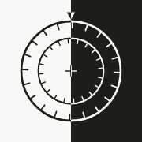

-

ORMAZehn Minuten zu zweit. Zwei Sichtweisen. Ein neuer Gedanke. Version 0.5.0 mit 48 Konstellationen und dem Modus allein (Re-Entry), Stand 27. September 2026. Die Einstiege und Spielaufträge sind Entwürfe.
-
Prüfraster: Nebeneinander und Nacheinander
Verräumlichung und Verzeitlichung als Achsen für die Ordnung von Theorien, Kunstpraxen und weiteren Ansätzen. Grundlagenpapier (PDF, 5 Seiten, Arbeitsstand 28. September 2026) und Anwendungsprompt für einen KI-Assistenten (Version 1.0.0) mit Anleitung.
-
Der Verteilapparat des Körpers
Ein Prüfinstrument dafür, wessen Körperereignis wie weit kommt, unter welcher Beschreibung, wer sie berichtigen kann und was daraus materiell folgt. Grundlagenpapier (PDF, 8 Seiten, Stand 28. September 2026) und Anwendungsprompt für einen KI-Assistenten (Version 1.0.0) mit Anleitung.
-
Prüfraster für Gesellschaftskonzepte
Zurzeit in Arbeit
Einheit · Operation · Vermittlung. Ein voraussetzungsarmes Modell zur Vorprüfung von Ansätzen, die eine Gesellschaftsdiagnose beanspruchen. Grundlagenpapier (PDF, 16 Seiten, Entwurf 0.4, 3. Oktober 2026) und Anwendungsprompt für einen KI-Assistenten (Version 0.4.0) mit Anleitung.
-
Prüfraster journalistischer Texte
Zurzeit in Arbeit
Ereignis · Kontext · Übergang · Gegenprobe · Systembezüge. Wie macht ein journalistischer Text aus ausgewähltem Material eine Aussage, welche Unterscheidungen tragen diese Aussage, und was könnte ihre Geltung begrenzen oder verändern? Fassung 0.4, 3. Oktober 2026, und Anwendungsprompt für einen KI-Assistenten (Version 0.4.0) mit Anleitung.
-
OMNA COLOR
Zwei Farbräder drehen gegeneinander. Zeigen sie zwei Farben, verbindet die Übung beide Themen, zeigen sie dieselbe Farbe, bleibt es beim reinen Thema. Gezogen wird aus 180 Gestaltungsübungen, mit dem Daumen oder per Knopf. Prototyp, Stand 2. Oktober 2026.
-
Das Dritte Rad
Drei Ringe drehen auf einer Achse: aussen die Zeit («Zu seiner Zeit», sieben Zyklen), in der Mitte die Form (die 40 Zeichen von ORNA), innen die Farbe (OMNA COLOR). Jeder Treffer öffnet sich im Rad (ganzer Text, ganze Begegnung, ganze Übung), und in jedem Schritt geht es weiter: in den Zettelkasten, nach ORNA, zu OMNA COLOR oder zurück ins Rad. Dazwischen schlägst du Brücken, die jev beim Bauen bewertet hat, und schreibst einen einzigen Satz. Gestaltet nach Tierkreis, Alchemie-Kreis und Goethes Farbenkreis, ohne Schrift im Rad. Prototyp, Stand 2. Oktober 2026.